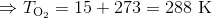

Subiectul II
Un cilindru orizontal, de volum 
 , este împărţit în două compartimente printr-un piston uşor, termoizolant, ce se poate deplasa fără frecare. Primul compartiment conţine oxigen (
, este împărţit în două compartimente printr-un piston uşor, termoizolant, ce se poate deplasa fără frecare. Primul compartiment conţine oxigen ( 
 ) la temperatura
) la temperatura  , iar al doilea compartiment conţine argon (
, iar al doilea compartiment conţine argon (  ) la temperatura
) la temperatura  . Pistonul se află în echilibru mecanic. Masa oxigenului reprezintă
. Pistonul se află în echilibru mecanic. Masa oxigenului reprezintă  din masa totală de gaz din cilindru, iar cantitatea totală de gaz din cilindru este
din masa totală de gaz din cilindru, iar cantitatea totală de gaz din cilindru este 
 . Determinați:
. Determinați:
- masa oxigenului din primul compartiment;
- raportul
 dintre volumele ocupate de cele două gaze;
dintre volumele ocupate de cele două gaze; - temperatura până la care ar trebui încălzit argonul, oxigenul păstrându-şi temperatura, astfel încât raportul dintre volumele ocupate de cele două gaze, când pistonul ajunge din nou în echilibru, să devină
 ;
; - presiunea argonului din al doilea compartiment, în condiţiile specificate la subpunctul c.
Rezolvare:
- Oxigenul este gaz biatomic, iar argonul este gaz monoatomic:


![\begin{align*} \Rightarrow \nu_{\text{total}}&=\frac{m_{_{\text{O}_2}}}{\mu_{_{\text{O}_2}}}+\frac{m_{_{\text{Ar}}}}{\mu_{_{\text{Ar}}}} \\\\ & =\frac{0,7\cdot m_{\text{total}}}{\mu_{_{\text{O}_2}}}+\frac{0,3\cdot m_{_{\text{total}}}}{\mu_{_{\text{Ar}}}} \\\\ & = m_{\text{total}}\cdot \left (\frac{0,7}{\mu_{_{\text{O}_2}}}+\frac{0,3}{\mu_{_{\text{Ar}}}} \right ) \\\\ & =m_{\text{total}}\cdot\left ( \frac{0,7}{32} +\frac{0,3}{40}\right ) \\\\&=m_{\text{total}}\cdot \frac{0,7\cdot 40+0,3\cdot 32}{32\cdot 40} \\\\& =m_{\text{total}}\cdot\frac{37,6}{1280} \end{align*}](https://liceunet.ro/media/webbooks/678/5528/images/equations/oet3ul6kg8nbzfjluyyw_g==.gif)


 .
.
- Pistonul se află în echilibru mecanic, deci presiunea în cele două compartimente este egală:




Împărţim relaţiile  şi
şi  şi obţinem:
şi obţinem:
![\begin{align*} \frac{V_{_{\text{O}_2}}}{V_{_{\text{Ar}}}}&=\frac{\dfrac{\nu_{_{\text{O}_2}}\cdot R\cdot T_{_{\text{O}_2}}}{p}}{\dfrac{\nu_{_{\text{Ar}}}\cdot R\cdot T_{_{\text{Ar}}}}{p}} \\\\& =\frac{\nu_{_{\text{O}_2}}\cdot T_{_{\text{O}_2}}}{\nu_{_{\text{Ar}}}\cdot T_{_{\text{Ar}}}} \\\\& =\frac{\dfrac{m_{_{\text{O}_2}}}{\mu_{_{\text{O}_2}}}\cdot T_{_{\text{O}_2}}}{\dfrac{m_{_{\text{Ar}}}}{\mu_{_{\text{Ar}}}}\cdot T_{_{\text{Ar}}}} \\\\& =\frac{\dfrac{m_{_{\text{O}_2}}}{\mu_{_{\text{O}_2}}}\cdot T_{_{\text{O}_2}}}{\dfrac{m_{_{\text{total}}}-m_{_{\text{O}_2}}}{\mu_{_{\text{Ar}}}}\cdot T_{_{\text{Ar}}}} \\\\& =\frac{\dfrac{112}{32}\cdot 288}{\dfrac{160-112}{40}\cdot 280} \\\\&=\frac{3,5\cdot 288}{\dfrac{48}{40}\cdot 280} \\\\& =\frac{1008}{1,2\cdot 280} \\\\& =\frac{1008}{336} \\\\& =3 \end{align*}](https://liceunet.ro/media/webbooks/678/5528/images/equations/-lctqboxxjgykkuukhr6ta==.gif)
 .
.
- Avem
 .
.
Folosim formula pentru raportul dintre volume obţinută la subpunctul anterior:

![\begin{align*} \Rightarrow T'_{_{\text{Ar}}}&=\frac{\nu_{_{\text{O}_2}}\cdot T_{_{\text{O}_2}}}{\nu_{_{\text{Ar}}}\cdot \dfrac{V'_{_{\text{O}_2}}}{V'_{_{\text{Ar}}}}} \\\\& =\frac{\dfrac{m_{\text{O}_2}}{\mu_{\text{O}_2}}\cdot T_{_{\text{O}_2}}}{\dfrac{m_{_{\text{Ar}}}}{\mu_{_{\text{Ar}}}}\cdot \dfrac{V'_{_{\text{O}_2}}}{V'_{_{\text{Ar}}}}} \\\\& =\frac{\dfrac{m_{_{\text{O}_2}}}{\mu_{_{\text{O}_2}}}\cdot T_{_{\text{O}_2}}}{\dfrac{m_{_{\text{total}}}-m_{_{\text{O}_{2}}}}{\mu_{_{\text{Ar}}}}\cdot \dfrac{V'_{_{\text{O}_2}}}{V'_{_{\text{Ar}}}}} \\\\& =\frac{\dfrac{112}{32}\cdot 288}{\dfrac{160-112}{40}\cdot 1,5} \\\\& =\frac{3,5\cdot 288}{1,2\cdot 1,5} \\\\& =\frac{1008}{1,8} \\\\& =560\ \text{K} \end{align*}](https://liceunet.ro/media/webbooks/678/5528/images/equations/hk4x6cjmmfv_-tml8aql0q==.gif)
 .
.
- Avem


Dar  .
.


 .
.